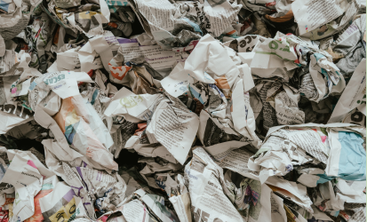

Tenha um computador rápido sem comprar um novo
Encontre peças de qualidade para seu computador para que funcione como novo a preços acessíveis
Entre na ReuseSegundo o Global E-waste Monitor, em 2019 , apenas 17% de 53,6Mt de resíduos eletrônicos foram reciclados
Junte-se à comunidade Reus-e para mudar essa realidade